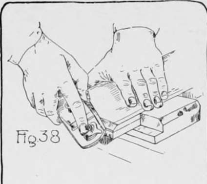

Crafting a Bread Cutting Board
Description
This section is from the book "Beginning Woodwork At Home And In School", by Clinton Sheldon Van Deusen. Also available from Amazon: Beginning Woodwork At Home And In School.
Crafting a Bread Cutting Board
The material required is a piece of butternut 13"x5 1/2"x 7/8" The tools to be used for the first time are the winding sticks.
Bread Cutting Board.
(a) Select the surface desired for the working face, and using the straight edge,* test to see if this surface is so curved that the middle is higher than the edges. If it is, place the piece against the bench-stop, as in Fig. 1, and plane down the middle with the jack-plane until, when tested with the straight-edge, the middle is even with or slightly below the edges.
(b) Test the piece, when in this condition, with the winding-sticks to determine if there is a wind in the surface. To do this proceed as follows: Place the piece on the bench with the surface that is to be the working face on top and in such a position that you can look lengthwise of the piece (Fig. 33). Place one of the winding-sticks near the farther end extending at right angles to the length of the pieces, with the narrow edge on top, and with the bevel edge away from you. Place the other winding-stick on the nearer end in a similar position. Now, looking lengthwise of the piece, stoop down slowly so that the eye comes below the level of the top of the winding-sticks. As the eye is lowered the farther winding-stick will disappear behind the nearer one. If there is no wind in the piece both ends of the farther stick will disappear at the same time, but if there is a wind in the surface one end will disappear before the other. If a wind is shown, a little thought will determine which two diagonally opposite corners are high, and the wind in the surface may be removed by planing down one or both of these corners. This should not be done with short strokes just at the corners, but the area planed should extend about two-thirds of the length of the piece from the high corners toward the low corners. Care should be taken that nothing is planed off from the low corners.
* The blade of the try-square should be used as a straight-edge.
(c) The planing and testing with both the straight-edge and winding-sticks should alternate until the surface is as true as you can make it; that is, there should be no wind in it, and when tested with the straight-edge (Fig. 34) both lengthwise and crosswise it should show a straight surface. Do not be suited with the good-enough kind of work, but have patience to work several hours if necessary to get a good, true working face. Set the plane very light for the last of the planing and study where the surface needs planing before touching the plane to it. Headwork is more essential than handwork in finishing this surface.
(d) When you have a true working face mark it with a light slanting line.
(e) Place the piece in the vise with a narrow side up and plane this side (Fig. 27) until it is smooth and fulfills the following tests: When the straight edge rests lengthwise on this surface (Fig. .35) and is slid along its entire length, practically no light should be visible under the straight edge; when the straight edge rests on this narrow surface crosswise a similar condition should be shown; also when the beam of the try-square is held tight against the working face with the edge of the blade resting lightly on this narrow surface (Fig. 36) no light should appear between the blade and this narrow surface, as the square is slid along, testing all parts of the surface. This last test is to show that this narrow surface, which is to be the joint side, is at right angles to the working face.
(f) When the joint side is completed mark it with two light slanting lines.
(g) Measure the width of the piece at both ends and set the gage (Fig. 8) at an even eighth-inch mark; that is, about less than the width of the narrower end.* With gage-block against the joint side, gage a line the entire length of the working face.
(h) Place the piece in the vice with the side opposite the joint side up, and plane exactly to the middle of the gage line. When within about 3y of the line, the tests applied to the joint side in e should be applied to this narrow surface. The plane should then be set for a thinner shaving, and, if the tests have not shown the surface true, an effort should be made to correct the faults by the time the middle of the gage line is reached, but under no circumstances should any planing be done beyond the middle of the gage line, even if the surface is not as true as it should be.
* It will be noticed that the length, width and thickness of the piece are omitted on the working drawing to allow some change of dimensions in planing this piece. When the rules for planing are referred to in later chapters the definite dimensions given are to' be used in gaging.
(i) With the middle part of the rule, measure very accurately the width of the piece, and see if it is exactly the width selected in g when setting the gage. If it is not the exact width intended, an error is indicated, either in setting the gage, gaging, or planing, and it may be desirable to gage another line 1/8" less than the other, and try again to bring the piece to an exact width. This would not be possible when working to exact dimensions, but it is possible here and it is absolutely essential that one be able to plane to an exact width if he is to be a good workman.
(j) Set the gage to an even sixteenth mark, which is a little less than the thickness of the piece in its thinnest part, and with the gage-block against the working face, gage a line the entire length of the joint side and the opposite side.
(k) Place the piece on the bench with an end against the bench-stop and plane down to the middle of the gage line, testing with the straight-edge only and changing the set of the plane to .a very light cut before reaching the line.
(l) It is desirable to test accurately the thickness, and if it has not been planed correctly, gage again and repeat the planing.
(m) Place the piece on the bench-hook, and block-plane one end as described in Chapter III, j, until it is smooth and is square with the working face and joint side, testing as follows: Hold the beam of the try-square tight against the joint side and slide it down until the blade touches the end lightly (Fig. 17). If the end is square with the joint side, practically no light will show between the blade and the end of the piece. In a similar manner, with the beam of the try-square against the working face, test to see if the end is square with the working face.
(n) Measure from this planed end, as in Fig. 14, an even length at least 1/4" less than the present length of the piece, and with the knife and try-square draw a line square around the piece through the point so determined.
(o) Saw a little outside of this line; then block-plane to the knife line. Test to see if the piece has been brought accurately to length.
(p) With the beam of the try-square against the joint side, measure so that the edge of the blade is 1 1/8" from one of the ends of the piece (Fig. 29) and draw a knife line about 1/4" long so that it will cross the middle of the piece, which point may be determined by the graduations on the blade of the try-square.
(q) Set gage at one-half the width of the piece and gage a line about 1/4" long crossing the knife line. With the auger-bit bore a hole where these two lines intersect.
(r) Gage a light pencil line on and entirely around the working face, 1/4" from its outer edges, in the following manner: Clamp the piece in the vise, with the working face up, so that at least one-half of the length of the piece extends beyond and above the vise (Fig. 37). Slide the gage-block to a point nearly 1/4 34" from the end of the beam which has no metal point. Hold the back of the gage-block against the side of the piece with the left hand, and place the right hand against the side of the gage-block that is touching the piece, the little finger and the one next to it resting against the gage-block, thus supporting the hand (Fig. 37), and the thumb and first two ringers holding the pencil so that its point is in the notch1 in the end of the gage-stick. Now, moving the gage along, with both hands supported on it, a pencil line is made parallel to the edge of the working face. Measure the distance this line is from the edge and if it is not 1/4" from the edge, change the position of the gage-bloek until the line will be 1/4" from the edge. In the manner described, gage a line on the working face across the end that is not in the vise and along each side as far as possible. Change the piece in the vise so that you can gage on the other end and complete the line around the working face.
(s) Clamp the piece in the vise so that the joint side is on top; then hold the gage-block set as in r against the working face and mark a pencil line along the entire length of the joint side. In a similar manner gage a pencil line across each end and along the side opposite the joint side.
*If there is no notch in the back end of the gage-stick, one may readily be made with the knife.
(t) Holding the piece on the bench-hook as for sawing, block-plane a bevel, or chamfer, down to the pencil line (Fig. 38). Hold the block-plane so that its center line points diagonally across the edge to be planed off, and the sharpened edge of the plane-iron is parallel to an imaginary surface containing the two pencil lines, then move the plane in the direction of the edge to be planed off. Before reaching either pencil line, test with the straight-edge, as in Fig. 39, to see that the chamfer is straight across, and notice if the edges of the surface just planed are equal distances from the pencil lines. Try to have a true surface when the two pencil lines are reached, but do not go beyond the lines to correct it. Plane a chamfer on the other end in the same way.
(u) Clamp the piece in the vise with the joint side up and the working face toward the bench. Hold the jack-plane as in Fig. 27, but tip it toward the bench, so that the sharpened edge of the plane-iron is parallel to an imaginary surface containing the two pencil lines; now plane off the chamfer to the two pencil lines, testing as explained in t. In the same manner, plane the chamfer on the other edge. This completes the bread-cutting board.
Pieces similar in form to the bread-cutting board are in quite common use. One made of tulip wood following the working drawing in Fig. 40 makes a very convenient board on which to hold work while chiseling, to protect the bench from injury. A board made of hard wood, such as birch or maple, and of somewhat different dimensions, makes a serviceable board on which to cut or pound meat.
Continue to: